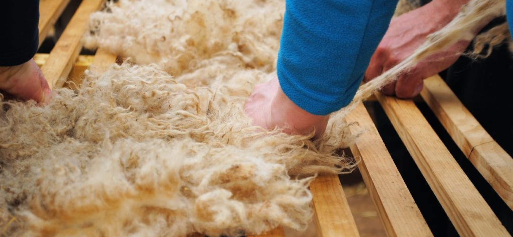
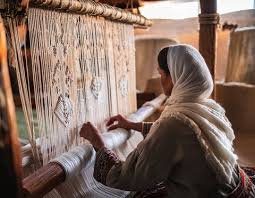
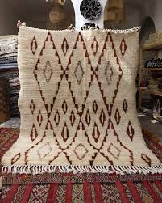

La fabrication traditionnelle des tapis marocains
Les tapis marocains, connus pour leurs motifs uniques et leurs couleurs vibrantes, sont le fruit d'un savoir-faire ancestral transmis de génération en génération.
.png)
Chaque région du Maroc possède ses propres styles et techniques, reflet de son histoire et de sa culture. Des montagnes de l'Atlas aux plaines du Haouz, découvrez comment ces œuvres d'art prennent vie entre les mains habiles des artisans marocains.
Les étapes de fabrication
1. La préparation de la laine
La laine est soigneusement lavée pour éliminer toutes impuretés, puis cardée pour démêler les fibres. Elle est ensuite teinte à l'aide de colorants naturels provenant de plantes, de minéraux ou d'insectes, créant ainsi une palette de couleurs riches et durables.

2. Le tissage
Réalisé sur des métiers traditionnels en bois, le tissage est une étape minutieuse qui demande patience et précision. Les artisans, souvent des femmes, travaillent pendant des semaines voire des mois pour créer des motifs complexes transmis par leurs aïeules.

3. La finition
Une fois le tissage terminé, le tapis est lavé à l'eau claire et séché au soleil. Certains tapis reçoivent des finitions supplémentaires comme des broderies, des pompons ou des franges, ajoutant une touche finale à ces œuvres d'art.

Découvrez le processus en vidéo
Documentaire sur la fabrication artisanale des tapis dans la région de Taznakht
Un patrimoine culturel inestimable
La fabrication des tapis marocains est bien plus qu'un simple artisanat : c'est un véritable patrimoine culturel qui continue d'enrichir l'identité du pays. Chaque tapis raconte une histoire, porte une symbolique et représente le savoir-faire d'une communauté.
Aujourd'hui, ces tapis sont reconnus internationalement pour leur qualité et leur beauté, tout en restant profondément ancrés dans la tradition marocaine.